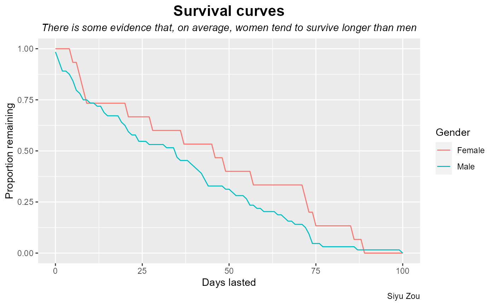
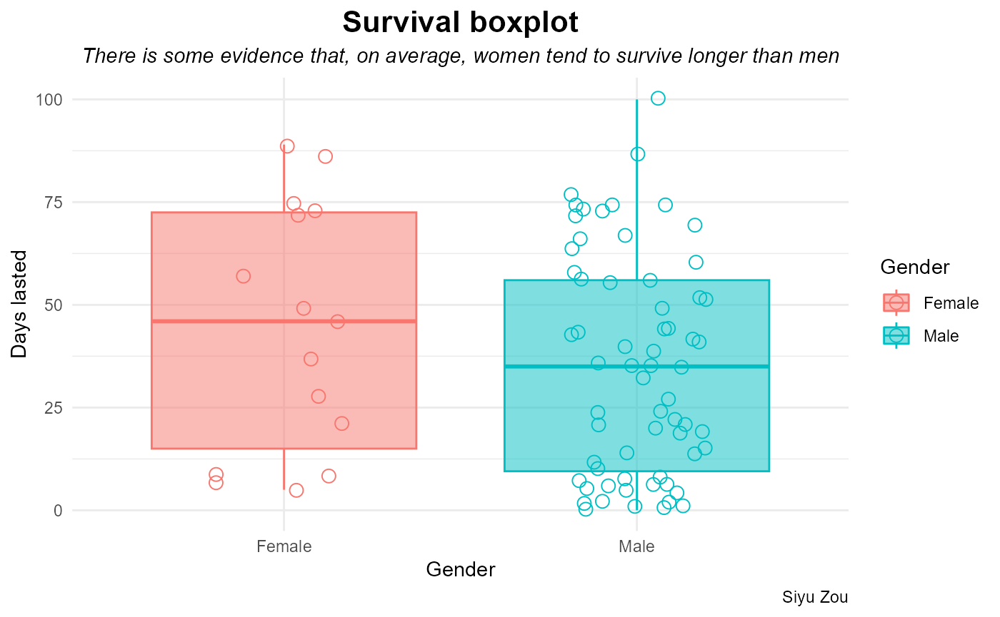
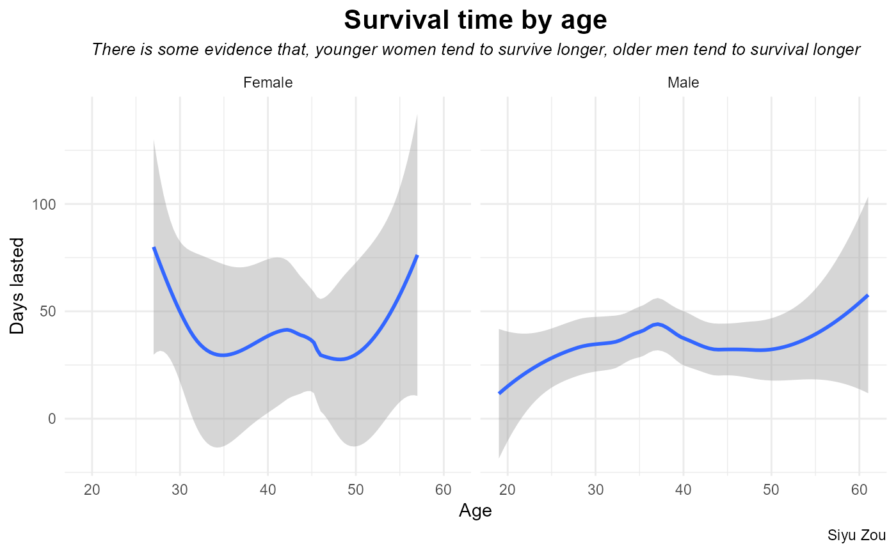

Example
Example_analysis.RmdPart 3E: Demonstrate calculate_CI()
1. Pick any dataset you wish from TidyTuesday to analyze.
Question
Based on the data frame of survivalists across all 9 seasons: Did males live longer than females? How many loadouts every survivalists has taken?
Original data
Data comes from TidyTuesday, which is a weekly podcast and global
community activity brought to you by the R4DS Online Learning Community.
Archive
of datasets from the 2023 series of TidyTuesday events
data dictionary
Here is a data dictionary for what all the column names mean: data dictionary
if (!require("tidyverse", quietly = TRUE)) {
install.packages("tidyverse", repos = "http://cran.us.r-project.org")
}
if (!require("tidytuesdayR", quietly = TRUE)) {
install.packages("tidytuesdayR", repos = "http://cran.us.r-project.org")
}
if (!require("here", quietly = TRUE)) {
install.packages("here", repos = "http://cran.us.r-project.org")
}
if (!require("ggplot2", quietly = TRUE)) {
install.packages("ggplot2", repos = "http://cran.us.r-project.org")
}
library("tidytuesdayR")
library("here")
library("tidyverse")2. Load the data into R
In this project, one datasets comes from TidyTuesday would be used. Specifically, we will use the following data from January 24th 2023. To access the data, you need to install the tidytuesdayR R package and use the function tt_load() with the date of ‘2023-01-24’ to load the data.
# tuesdata <- tidytuesdayR::tt_load('2023-01-24')
# survivalists <- tuesdata$survivalists
# tests if a directory named "data" exists locally
if (!dir.exists(here("data"))) {
dir.create(here("data"))
}
if (!file.exists(here("data", "tuesdata_survivalists.csv"))) {
tuesdata <- tidytuesdayR::tt_load("2023-01-24")
survivalists <- tuesdata$survivalists
loadouts <- tuesdata$loadouts
# save the files to RDS objects
write.csv(tuesdata$survivalists, file = here("data", "tuesdata_survivalists.csv"))
write.csv(tuesdata$loadouts, file = here("data", "tuesdata_loadouts.csv"))
}
survivalists <- read.csv(here("data", "tuesdata_survivalists.csv"))
loadouts <- read.csv(here("data", "tuesdata_loadouts.csv"))3. data wrangling and data visualization
data wrangling
purr
https://gradientdescending.com/alone-r-package-datasets-from-the-survival-tv-series/
library(tidyverse)
library(purrr)
# filter 'country' contains "United States"
has_united_states <- map_lgl(survivalists$country, ~ str_detect(.x, "United States"))
clean_survival <- survivalists[has_united_states, ]
df <- expand_grid(
days_lasted = 0: maximum(clean_survival$days_lasted),
gender = unique(clean_survival$gender)
) |>
left_join(
clean_survival |>
count(days_lasted, gender),
by = c("days_lasted", "gender")
) |>
left_join(
clean_survival |>
count(gender, name = "N"),
by = "gender"
) |>
group_by(gender) |>
mutate(
n = replace_na(n, 0),
n_lasted = N-cumsum(n),
p = n_lasted/N
) Plot 1: Kaplan-Meier survival curves
df |>
ggplot(aes(days_lasted, p, colour = gender)) +
geom_line() +
labs(
x = "Days lasted",
y = "Proportion remaining",
colour = "Gender",
title = "Survival curves",
subtitle = "There is some evidence that, on average, women tend to survive longer than men",
caption = "Siyu Zou"
) +
theme(
plot.title = element_text(size = 16, face = "bold",hjust = 0.5),
plot.subtitle = element_text(size = 11, face = "italic" ,hjust = 0.5),
)
Plot 2: boxplots
clean_survival |>
ggplot(aes(gender, days_lasted, color = gender, fill = gender)) +
geom_boxplot(alpha = 0.5) +
geom_jitter(width = 0.2, pch = 1, size = 3) +
theme_minimal() +
labs(
colour = "Gender",
fill = "Gender",
x = "Gender",
y = "Days lasted",
title = "Survival boxplot",
subtitle = "There is some evidence that, on average, women tend to survive longer than men",
caption = "Siyu Zou"
) +
theme(
plot.title = element_text(size = 16, face = "bold",hjust = 0.5),
plot.subtitle = element_text(size = 11, face = "italic" ,hjust = 0.5),
)
plot 3:
clean_survival |>
ggplot( aes(age, days_lasted) ) +
geom_smooth() +
facet_grid(~gender) +
theme_minimal() +
labs(
x = "Age",
y = "Days lasted",
title = "Survival time by age",
subtitle = "There is some evidence that, younger women tend to survive longer, older men tend to survival longer",
caption = "Siyu Zou"
) +
theme(
plot.title = element_text(size = 16, face = "bold",hjust = 0.5),
plot.subtitle = element_text(size = 10, face = "italic" ,hjust = 0.5),
)
#> `geom_smooth()` using method = 'loess' and formula = 'y ~ x'
5. Summarize
There is some evidence to suggest that women, on average, survive longer than men. The rules allow each survivalist to take 10 items with them. The minimum number of loadouts taken by survivalist is 1, the maximum number of loadouts taken by survivalist is 10, and the mean number is 5.5 items.